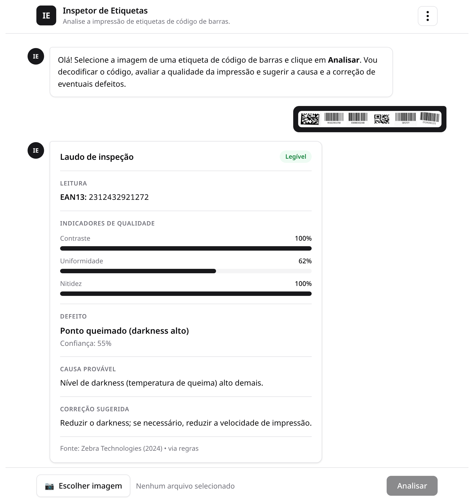
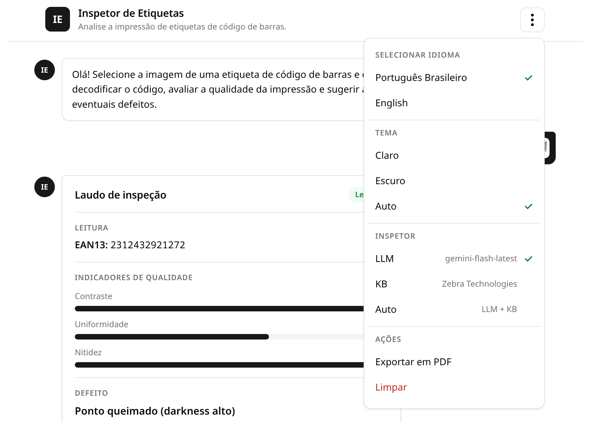

Inspetor de Etiquetas
Visão geral do inspetor de etiquetas de código de barras — visão computacional, CNN (PyTorch) e pipeline multiagente (Gemini + ADK).
Dada a foto de uma etiqueta com código de barras, o sistema detecta defeitos típicos de impressão térmica e sugere a causa provável e a correção, combinando OpenCV, pyzbar, Tesseract, uma CNN (PyTorch) e o Gemini, orquestrados pelo Agent Development Kit (ADK). A entrega é um chat: envie a imagem, receba o laudo.
Projeto da disciplina Visão Computacional (cód. 2587) — PPG em Ciência da Computação, ICT/UNIFESP.
O que o sistema faz
Dada a imagem de uma etiqueta com código de barras, o sistema:
- decodifica o código (simbologia + conteúdo) e diz se é legível — OpenCV + pyzbar;
- faz OCR do texto humano-legível — Tesseract;
- estima indicadores de qualidade (contraste, uniformidade, nitidez) — OpenCV;
- classifica o defeito de impressão entre 7 classes — CNN MobileNetV3-Small (PyTorch);
- diagnostica a causa provável e a correção — Gemini (ADK) com fallback por regras sobre a base de conhecimento Zebra;
- consolida tudo em um laudo JSON, servido por uma API/chat.
Arquitetura (pipeline multiagente)
A orquestração usa o ADK: as análises 1–4 rodam em paralelo, seguidas do diagnóstico e da montagem do laudo.
imagem da etiqueta
│
┌──────────────┴───────────────┐
│ ParallelAgent │ (análises independentes)
│ ┌─────────┬──────────┬─────┐ │
│ │ leitura │indicadores│defeito│ │
│ │pyzbar+ │ OpenCV │ CNN │ │
│ │Tesseract│(contraste)│PyTorch│ │
│ └─────────┴──────────┴─────┘ │
└──────────────┬───────────────┘
▼
agente de diagnóstico (Gemini + KB Zebra) → causa + correção
▼
agente de laudo (JSON) ─────────────────────► resposta no chatDois modos de execução
- Pipeline direto (
config.inspector.tools.analyze_image): encadeia as funções sem o ADK. Funciona mesmo sem chave do Gemini (diagnóstico por regras da base Zebra). É o baseline monolítico da avaliação e o núcleo usado por CLI e API. - Pipeline orquestrado (
config.inspector.agents): o grafo ADK acima (ParallelAgent→ diagnóstico → laudo), acionado com--adkna CLI ouadk=truena API.
Degradação graciosa
O sistema nunca "quebra" por falta de biblioteca: se pyzbar/Tesseract/torch/Gemini não estiverem disponíveis, a etapa correspondente retorna um aviso no campo errors do laudo e as demais continuam. Sem GOOGLE_API_KEY, o diagnóstico usa as regras da base Zebra (config/inspector/kb.py + config/data/kb_zebra.json) em vez do Gemini.
Classes de defeito (CNN)
A CNN classifica a etiqueta entre 7 classes (a ordem define o índice usado pela rede — ver config/inspector/settings.py):
Classe (CLASSES) | Rótulo (CLASS_LABELS_PT) |
|---|---|
no_defect | Sem defeito |
damaged_printhead_element | Elemento da cabeça danificado |
wrinkled_ribbon | Ribbon enrugado |
burnt_spot | Ponto queimado (darkness alto) |
light_print | Impressão clara (darkness baixo) |
uneven_pressure | Pressão desigual da cabeça |
dirty_printhead | Cabeça de impressão suja (voids) |
Estrutura do projeto
src/
├── config/
│ ├── inspector/ # pacote principal
│ │ ├── settings.py # classes, caminhos, constantes
│ │ ├── vision.py # OpenCV (segmentação), pyzbar (decode), Tesseract (OCR), indicadores
│ │ ├── network.py # CNN MobileNetV3-Small (construir/carregar/prever)
│ │ ├── dataset.py # Dataset PyTorch (lê dataset_sintetico/labels.csv)
│ │ ├── training.py # treino por transferência de aprendizado
│ │ ├── kb.py # base de conhecimento Zebra (defeito→causa→ação)
│ │ ├── diagnosis.py # Gemini com fallback por regras
│ │ ├── tools.py # ferramentas do ADK + analyze_image (pipeline direto)
│ │ ├── agents.py # grafo ADK (paralelo → diagnóstico → laudo)
│ │ └── report.py # esquema do laudo
│ ├── data/kb_zebra.json # KB extraída da documentação Zebra
│ ├── datasets/ # datasets (sintético + externos)
│ ├── models/ # modelos treinados
│ ├── results/ # resultados de experimentos
│ └── generate_dataset.py # gerador do dataset sintético
├── app/
│ ├── cli.py # linha de comando
│ ├── api.py # FastAPI (/analyze) + serve o chat
│ └── chat.html # chat web (envio de imagem)
├── pyproject.toml # dependências (gerenciadas por uv)
└── ESPECIFICACAO.md # contrato de interfacesBase de conhecimento
config/data/kb_zebra.json consolida o mapeamento defeito → causa → ação da documentação oficial da Zebra (ZT411/ZT421 e a base Resolving Print Quality Issues), usado pelo agente de diagnóstico. O campo source referencia "Zebra Technologies (2024)".
Próximos passos
- Instalação — pré-requisitos,
uv synce dependências de sistema. - Uso — CLI, chat web e chat nativo do ADK.
- Treinamento da CNN — treinar o classificador de defeitos.
- Datasets — dataset sintético e datasets externos do Roboflow.
- API HTTP — endpoints e formato do laudo.
- Configurar o Gemini — chave de API e o modo por regras.
Instalação
Pré-requisitos e instalação do inspetor de etiquetas — Python 3.12 via uv e dependências de sistema (libzbar0, Tesseract).
Esta página cobre a preparação do ambiente para rodar o inspetor de etiquetas (o pacote Python em src/). A documentação (este site) tem instalação própria, descrita ao final.
Pré-requisitos
- Python 3.12 — o projeto exige
>=3.10,<3.13(em 3.13/3.14 alguns wheels detorch/opencvainda podem faltar). Recomenda-se gerenciar viauv. - uv — gerenciador de pacotes e ambientes Python usado pelo projeto (
pyproject.toml+uv.lock). - Dependências de sistema: ZBar e Tesseract (ver abaixo).
1. Dependências de sistema (ZBar e Tesseract)
O pyzbar precisa da biblioteca ZBar e o OCR precisa do Tesseract (com o pacote de idioma português):
# Debian/Ubuntu
sudo apt install libzbar0 tesseract-ocr tesseract-ocr-por
# Fedora
sudo dnf install zbar tesseract tesseract-langpack-porSem essas bibliotecas o sistema não quebra: as etapas de leitura/OCR apenas retornam um aviso no campo errors do laudo (degradação graciosa).
2. Ambiente Python com uv
A partir da pasta src/ (onde estão pyproject.toml e uv.lock):
cd src
uv syncO uv sync cria o ambiente virtual (.venv/) e instala as dependências fixadas no uv.lock. O projeto já configura o índice CPU do PyTorch (torch/torchvision sem CUDA), então a instalação é leve.
Para rodar comandos dentro do ambiente, use uv run:
uv run python -m app.cli --helpOnde a documentação usar python -m ..., você pode prefixar com uv run (ex.: uv run python -m app.cli foto.jpg) para garantir o ambiente correto.
3. Chave do Gemini (opcional)
Copie o arquivo de exemplo e preencha a chave, se quiser usar o Gemini:
cp .env.example .env # opcional: preencha GOOGLE_API_KEYSem a chave, o diagnóstico usa o fallback por regras sobre a base de conhecimento Zebra. Veja Configurar o Gemini.
Abrir a documentação (este site)
A documentação é uma página única (src/docs/index.html) com estilo via CDN — não precisa de build. Abra o arquivo src/docs/index.html no navegador (duplo-clique).
Uso
Como usar o inspetor de etiquetas — CLI, chat web (FastAPI/uvicorn) e o chat nativo do ADK.
Há três formas de usar o inspetor: pela linha de comando (CLI), pelo chat web (FastAPI) e pelo chat nativo do ADK. Todas partem da pasta src/.
Prefixe os comandos python -m ... com uv run para garantir o ambiente do uv (ex.: uv run python -m app.cli foto.jpg).
1. CLI
Analisa a imagem de uma etiqueta e imprime um resumo do laudo:
python -m app.cli foto.jpgExemplos com uma imagem do dataset e as opções disponíveis:
python -m app.cli config/datasets/dataset_sintetico/images/test/wrinkled_ribbon/ean13_075.png
python -m app.cli minha_etiqueta.jpg --json # laudo completo em JSON (indentado)
python -m app.cli minha_etiqueta.jpg --adk # via grafo ADK (requer Gemini)Interface: python -m app.cli CAMINHO [--adk] [--json].
- Sem
--adk: roda o pipeline direto (config.inspector.tools.analyze_image). - Com
--adk: tenta o grafo multiagente (config.inspector.agents.analyze_via_adk) e, se ele falhar por qualquer motivo (lib ausente, erro de execução, sem chave), cai de volta para o pipeline direto — a análise nunca deixa de acontecer. - Com
--json: imprime o laudo completo em JSON além do resumo.
2. Chat web (FastAPI + uvicorn)
Sobe o servidor HTTP que serve a interface de chat e o endpoint de análise:
uvicorn app.api:app --reloadDepois abra http://localhost:8000 e envie a foto da etiqueta — o laudo aparece como mensagens de chat (legível/simbologia, defeito + confiança, causa, correção).

A página (app/chat.html) é autossuficiente (HTML + CSS + JS vanilla, sem CDN) e envia a imagem via htmx para POST /analyze-htmx, inserindo o cartão do laudo na conversa. Detalhes dos endpoints em API HTTP.
Menu de configurações (⋮)
O botão de três pontinhos (⋮) no topo abre um menu com quatro seções; as preferências ficam salvas no localStorage do navegador:
- Idioma — Português Brasileiro ou English. A troca é instantânea (i18n real PT/EN, via atributos
data-i18n) e o idioma escolhido acompanha cada análise, de modo que o laudo também sai no idioma selecionado. - Tema — Claro, Escuro ou Auto (Auto segue o tema do sistema operacional).
- Inspetor (motor de diagnóstico) — LLM (mostra o modelo ativo, ex.
gemini-flash-latest), KB Zebra Technologies (regras) ou Auto (prefere o LLM e usa a KB como fallback). A opção Auto só aparece quando há um LLM configurado no.env. - Ações — Exportar em PDF (via
window.print+@media print) e Limpar (em vermelho; apaga a conversa).

O idioma e o motor de inspeção escolhidos são enviados a cada envio (via htmx:configRequest), como os campos idioma e inspetor do POST /analyze-htmx.
Imagem sem código de barras (curto-circuito)
Se a imagem enviada não contém um código de barras, o inspetor faz um curto-circuito: a presença do código é verificada antes da inspeção pesada e, quando não há código, o laudo traz apenas o aviso "Nenhum código de barras detectado na imagem." — sem rodar a CNN nem chamar o LLM. Isso economiza processamento e chamadas de API e evita diagnósticos espúrios.
3. Chat nativo do ADK (opcional)
Interface de chat do próprio ADK sobre o grafo de agentes (config/inspector/agents.py):
adk webRequer o Gemini configurado (chave de API) e o pacote google-adk instalado. Veja Configurar o Gemini.
Fluxo típico
- (Opcional) Gerar/atualizar o dataset sintético.
- Treinar a CNN para produzir
config/models/classificador_defeitos.pt. - Analisar imagens pela CLI ou pelo chat web.
Treinamento da CNN
Como treinar o classificador de defeitos (MobileNetV3-Small, PyTorch) por transferência de aprendizado sobre o dataset sintético.
O classificador de defeitos é uma CNN MobileNetV3-Small (PyTorch/torchvision), treinada por transferência de aprendizado sobre o dataset sintético.
Pré-requisitos
- Ambiente Python instalado (ver Instalação).
- Um dataset rotulado em
config/datasets/dataset_sintetico/com olabels.csv(splitstrain/val/test). Gere-o conforme Datasets se ainda não existir.
Treinar
python -m config.inspector.training --epochs 10
# salva o melhor modelo (por val_acc) em config/models/classificador_defeitos.ptArgumentos do script (config/inspector/training.py):
| Flag | Padrão | Descrição |
|---|---|---|
--epochs | 10 | Número de épocas de treino. |
--lr | 1e-3 | Taxa de aprendizado (otimizador Adam). |
--batch | 32 | Tamanho do batch. |
--output | config/models/classificador_defeitos.pt | Caminho do modelo salvo. |
Como funciona
- Backbone:
mobilenet_v3_smallpré-treinado (ImageNet); a última camadaLinearé trocada para as 7 classes do projeto. - Transferência de aprendizado: por padrão o backbone é congelado e apenas a cabeça é treinada (
freeze_backbone=True). - Pré-processamento:
Resize(224),Grayscale(3),ToTensoreNormalizecom média/desvio do ImageNet (MEAN/STDemconfig/inspector/settings.py); no treino há augmentation leve. - Otimização: perda
CrossEntropy, otimizadorAdam; salva o melhor modelo pela acurácia de validação. - Retorno: a função
train(...)devolve métricas finais{"val_acc": ..., "test_acc": ..., "per_class": {...}}.
A ordem das classes em CLASSES (em config/inspector/settings.py) define o índice usado pela rede. Não reordene as classes sem retreinar o modelo.
Dataset
O modelo aprende sobre o dataset sintético (padrão) em config/datasets/dataset_sintetico/, cujas 7 classes reproduzem assinaturas visuais de defeitos de impressão térmica descritas na documentação Zebra. Para gerar ou substituir o dataset (inclusive por dados reais do Roboflow), veja Datasets.
Depois de treinar
Com o modelo salvo em config/models/classificador_defeitos.pt, a etapa de classificação passa a funcionar na CLI e na API. Se o arquivo do modelo não existir, a etapa de classificação retorna um aviso no campo errors do laudo (degradação graciosa) — as demais análises continuam.
Datasets
Dataset sintético (generate_dataset.py) e datasets externos de códigos de barras danificados (Roboflow).
O treinamento do classificador usa, por padrão, um dataset sintético gerado localmente. Também é possível complementar/substituir por datasets externos (Roboflow) de códigos de barras danificados.
Dataset sintético (generate_dataset.py)
O script generate_dataset.py produz um dataset sintético, balanceado e rotulado de defeitos de impressão de códigos de barras (1D e 2D). Cada defeito reproduz a assinatura visual descrita na documentação Zebra ZT411/ZT421 (troubleshooting de qualidade de impressão) — é o dataset que treina o "agente de defeitos físicos".
python config/generate_dataset.py --out config/datasets/dataset_sintetico --per-class 90 --seed 42Argumentos:
| Flag | Padrão | Descrição |
|---|---|---|
--out | dataset | Pasta de saída do dataset. |
--per-class | 90 | Imagens por classe. |
--seed | 42 | Semente aleatória (reprodutibilidade). |
--only-1d | (desligado) | Ignora QR/DataMatrix (só simbologias 1D). |
Saída gerada:
<out>/
├── images/<split>/<class>/<symbology>_<idx>.png
├── labels.csv # filename, split, class, symbology, payload, params
└── previews/<class>.png # montagem para o artigo- Classes (7):
no_defect,damaged_printhead_element,wrinkled_ribbon,burnt_spot,light_print,uneven_pressure,dirty_printhead. - Simbologias: 1D (
code128,code39,ean13,ean8,itf) e 2D (qr,datamatrix).
O caminho padrão esperado pelo treino é config/datasets/dataset_sintetico/ (configurável pela variável de ambiente DATASET_DIR).
Datasets externos (Roboflow)
Para treinar/avaliar com imagens reais de códigos de barras danificados, o Roboflow Universe reúne vários datasets públicos. Busque por códigos de barras com dano/qualidade de impressão:
Após baixar, ajuste o layout para o formato esperado (images/<split>/<class>/... + labels.csv) ou aponte DATASET_DIR para a pasta do dataset externo antes de treinar a CNN.
API HTTP
Endpoints da API FastAPI do inspetor de etiquetas e o formato do laudo (tabela de campos).
A API é servida por FastAPI (app/api.py) e sobe com uvicorn:
uvicorn app.api:app --reload
# http://localhost:8000Ela serve a interface de chat e expõe o pipeline de análise. A documentação interativa (Swagger) fica em http://localhost:8000/docs.
Endpoints
GET /
Serve a interface de chat (app/chat.html, HTML autossuficiente). Resposta: text/html.
POST /analyze
Recebe uma imagem, roda a análise e devolve o laudo em JSON.
- Corpo:
multipart/form-datacom o campoimagem(arquivo). - Query opcional:
adk(bool, padrãofalse) — usa o grafo multiagente (ADK) em vez do pipeline direto; se o ADK falhar, cai automaticamente no pipeline direto e registra o aviso emerrors. - Resposta:
application/jsoncom o laudo. Em erro interno, retorna{"error": "..."}com status500.
# pipeline direto
curl -F "imagem=@minha_etiqueta.jpg" http://localhost:8000/analyze
# via grafo ADK (requer Gemini)
curl -F "imagem=@minha_etiqueta.jpg" "http://localhost:8000/analyze?adk=true"A imagem é gravada em um arquivo temporário (o pipeline trabalha com caminhos de arquivo) e removida ao final, independentemente do resultado.
POST /analyze-htmx
Igual ao POST /analyze, mas devolve um fragmento HTML (o cartão do laudo, no estilo shadcn) em vez de JSON. É o endpoint usado pela página de chat via htmx (hx-post="/analyze-htmx"), para atualizar a conversa sem recarregar a página.
Além da imagem, o corpo (multipart/form-data) aceita dois campos de formulário, enviados pelo chat via htmx:configRequest:
imagem(arquivo) — a etiqueta a analisar.idioma(pt-BR|en-US, padrãopt-BR) — idioma dos rótulos do cartão e do próprio laudo.inspetor(llm|kb|auto, padrãollm) — motor de diagnóstico:llmeautousam o Gemini (com fallback por regras);kbforça as regras da base Zebra.
GET /static/*
Arquivos estáticos servidos localmente (ex.: htmx.min.js), sem depender de CDN.
A página de chat (GET /) envia a imagem via htmx para POST /analyze-htmx e insere na conversa o cartão do laudo retornado. O POST /analyze (JSON) continua disponível para integrações programáticas.
GET /health
Verificação de saúde do serviço. Resposta: {"status": "ok"}.
Formato do laudo
O POST /analyze devolve o laudo consolidado (dataclass Report, config/inspector/report.py). Campos:
| Campo | Tipo | Descrição |
|---|---|---|
readable | bool | null | O código pôde ser decodificado? null se a leitura ficou indisponível. |
symbology | str | null | Ex.: "CODE128", "EAN13", "QRCODE". |
content | str | null | Payload decodificado do código. |
ocr_text | str | Texto humano-legível (Tesseract); "" se indisponível. |
indicators | object | {contrast, uniformity, sharpness} em [0,1]. |
defect | object | {class, class_label, confidence, probs} da CNN. |
probable_cause | str | Causa provável do defeito. |
corrective_action | str | Correção recomendada. |
reasoning | str | Trecho/raciocínio que embasa o diagnóstico. |
source | str | Referência (ex.: "Zebra Technologies (2024)"). |
diagnosis_method | str | "gemini" ou "rules". |
overall_confidence | float | Confiança global (0–1). |
errors | array | Avisos/degradações (libs ausentes, ADK indisponível etc.). |
Exemplo
{
"readable": true,
"symbology": "CODE128",
"content": "CB123",
"ocr_text": "CB123",
"indicators": { "contrast": 0.82, "uniformity": 0.74, "sharpness": 0.6 },
"defect": {
"class": "wrinkled_ribbon",
"class_label": "Ribbon enrugado",
"confidence": 0.91,
"probs": {}
},
"probable_cause": "Tensão/alinhamento do ribbon",
"corrective_action": "Ajustar a tensão do ribbon; verificar o percurso",
"reasoning": "...",
"source": "Zebra Technologies (2024)",
"diagnosis_method": "rules",
"overall_confidence": 0.91,
"errors": []
}Configurar o Gemini
Como configurar a GOOGLE_API_KEY para o diagnóstico via Gemini/ADK e como rodar sem chave (fallback por regras).
O passo de diagnóstico (causa provável + correção) pode usar o Gemini, mas é totalmente opcional: sem chave de API, o sistema usa o fallback por regras sobre a base de conhecimento Zebra.
Um guia detalhado fica em src/CONFIGURAR_GEMINI.md. Esta página é um resumo.
Com o Gemini (chave de API)
- Obtenha uma chave no Google AI Studio (
GOOGLE_API_KEY). -
Configure a chave — copie o exemplo e preencha:
Nocp .env.example .env.env:
Alternativamente, exporte a variável no ambiente:GOOGLE_API_KEY=sua_chave_aqui # Opcionais: # GEMINI_MODEL=gemini-flash-latest # DATASET_DIR=/caminho/para/dataset_sintetico # MODEL_PATH=/caminho/para/classificador_defeitos.ptexport GOOGLE_API_KEY="sua_chave_aqui" - Modelo: o padrão é
gemini-flash-latest(constanteGEMINI_MODELemconfig/inspector/settings.py), sobreponível pela variável de ambienteGEMINI_MODEL.
Com a chave presente, o diagnóstico (config/inspector/diagnosis.py) monta um prompt com o contexto da base Zebra (kb.context_for_llm) e pede ao Gemini uma resposta estritamente em JSON (probable_cause, corrective_action, reasoning). O campo diagnosis_method do laudo fica "gemini".
Na interface de chat web, a seção Inspetor do menu (⋮) mostra o modelo ativo (ex.: gemini-flash-latest) ao lado da opção LLM. A opção Auto (LLM com fallback para a KB Zebra) só aparece quando há um LLM configurado no .env; sem chave, o menu oferece apenas a KB Zebra Technologies (regras).
A função settings.has_gemini() considera configurada a chave se GOOGLE_API_KEY ou GEMINI_API_KEY estiver definida no ambiente.
Sem chave (fallback por regras)
Se não houver chave configurada — ou se a chamada ao Gemini falhar por qualquer motivo (lib ausente, rede, cota, JSON inválido) — o diagnóstico recorre graciosamente às regras da base de conhecimento Zebra (config/inspector/kb.py + config/data/kb_zebra.json): para a classe do defeito, retorna a causa provável e a ação corretiva mapeadas na documentação. Nesse caso o campo diagnosis_method fica "rules".
Ou seja: o sistema funciona sem chave — apenas o texto do diagnóstico deixa de ser gerado pelo LLM e passa a vir das regras.
ADK (grafo multiagente)
O modo --adk (CLI) / adk=true (API) e o adk web usam o Agent Development Kit com o Gemini como modelo dos agentes — portanto requerem a chave configurada e o pacote google-adk instalado. Sem isso, a CLI e a API caem automaticamente no pipeline direto (que, por sua vez, usa Gemini se houver chave ou as regras caso contrário).